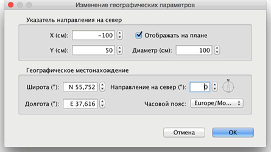

| Редактирование компаса и географического местоположения | |||
Каждый новый дом содержит компас в левом верхнем углу. Как и другие объекты на плане, компас может быть перемещён мышью или стрелками клавиатуры, после его выделения. Когда компас является единственным выбранным объектом на плане вы можете изменить его размер или поменять направление на север при помощи его указателей.
|

|
При наведении указателя мыши на один из этих индикаторов, он меняется, показывая, что вы можете перетащить эту точку. Компас и географическое местоположение вашего дома могут быть отредактированы так же в панели настроек, вызываемой двойным щелчком на компасе, или выбрав пункт меню План > Изменить географические параметры.  В панели компаса вы можете изменить расположение, диаметр, направление на север, отображать или нет компас на плане. Так же вы можете выбрать широту и долготу географического положения дома и часовой пояс своего региона. |
|